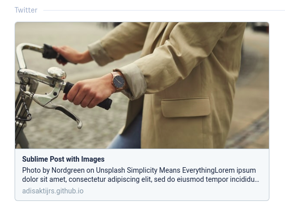

Hexo Theme: Minima v1.0 is Officially Released
Dalam Product — Oct 11, 2020

Minima preview, device image by Freepik
About Minima
Minima is an undoubtedly simple and lightweight dark/light mode theme for Hexo. I created this from scratch using Skeleton CSS boilerplate. It uses only CSS and Vanilla JS, without using unnecessary third-party ‘render-blocking’ libraries.
Simplicity
Simplicity is a must! When I decided to move to Hexo for my personal blogging platform, the main reason was to find a simple and clean design, no fancy looks, unnecessary images and colors either. I’d like to have a blog that focuses on the content of my posts rather than turning readers attention to a ‘cluttered’ user interface. I found lots of beautiful themes on the Hexo themes page, but finally I decided to make my own.
Lightweight
This ‘lightweight’ means the theme uses as few design stuff as possible. Fewer JavaScript and CSS files. Minima only uses Skeleton for the CSS-boilerplate and nanobar.js for the top loading bar. The following is the ‘gross’ performance of my blog with the Minima theme:

Customization
Minima uses vanilla JavaScript, vanilla CSS, and EJS. So it will be very easy for everyone to edit and customize the theme.
Features
- Pass the core of Hexo Theme Unit Test
- Fully responsive design
- Support post, page, tags, archives, and pagination
- SEO: post meta description and images (appears in Facebook/Twitter shared-link)
- [Customizable] icon Dark/light mode instant switch 🌑/☀️
- [Customizable] theme color
- Code highlighting with Prism.js
- Disqus for post comments
- Button for show comments section for faster posts loading
Documentation
Quick Start
Use the stable version
- Download the stable version here. And rename the folder to minima and place it at the themes folder of your Hexo blog. New to Hexo? Watch this tutorial
Or you can use the development version
- Execute this command in your terminal (at your Hexo blog root dir):
git clone https://github.com/adisaktijrs/hexo-theme-minima.git themes/minima - Modify the theme in Hexo configuration file _config.yml (config file in the root dir, not the theme config) by setting theme variable to minima_config.yml
# Extensions ## Plugins: https://hexo.io/plugins/ ## Themes: https://hexo.io/themes/ theme: minima - That’s all. To fully configure the Minima theme, follow the Configuration steps below!
Site Configuration
Code Highlighting
Minima uses Prism.js to highlight the code. So modify the _config.yml of your site to somewhat like this below:
_config.ymlhighlight: enable: false #set it to false line_number: false auto_detect: false tab_replace: '' wrap: false #false hljs: false prismjs: enable: true #set it to true preprocess: true line_number: true #optional tab_replace: ''
Make sure your code highlight configuration is saved properly by clearing the Hexo cache and run your server. Run this command in your terminal:
$ hexo clean
$ hexo server
SEO Image Thumbnail for Shared-link
Minima uses meta data for image preview when your Post link is shared to social media. Here the example when you share your Post link to Twitter:

To do that you must modify your post_asset_folder variable to true in your site _config.yml. See below:
_config.yml# Writing post_asset_folder: true #set it to true
And then whenever you make a post, add thumbnail in your post .md file. See the example post below:
/source/_posts/your-post.md--- title: Your Post date: 2020-10-11 10:09:47 tags: [Tag1] thumbnail: YourImage.jpg #Here is the image preview ---
Learn more about it here.
Theme Configuration
You can customize many elements in your Minima blog by changing some variables in minima/_config.yml:
/themes/minima/_config.yml#title in header title: "Hi Folks." #main info #owner owner: "I am Adi Sakti Jrs" email: test@test.test info: "A student and web developer from Indonesia 🇮🇩" #description desc: "This is Minima, an undoubtedly simple and lightweight dark/light mode theme for Hexo." #menu menu: Works: /Works About: /About #index/main page max show posts (in number) max_post: 4 # Colors use hex color without # # Theme color tcolor: 0FA0CE # Define path to user css #(could be also located outside of theme) # Relative to source/ directory usercss: css/user.css # social profile at the footer/bottom footer: true placename: Earth placelink: https://en.wikipedia.org/wiki/Earth github: https://github.com/adisaktijrs linkedin: https://linkedin.com/in/adisaktijrs twitter: https://twitter.com/adisaktijrs instagram: https://instagram.com/adisaktijrs stackoverflow: https://stackoverflow.com/story/tobiasreithmeier # Misc nanobar: /js/nanobar.min.js switch_light: ☀️ switch_dark: 🌑 # favicon favicon: /images/favicon.png # thumbnail thumbnail: /images/thumbnail.jpg article: thumbnail: true # DISQUS comments (sign up to Disqus to get disqus_shortname) disqus_enabled: false disqus_shortname: https-adisaktijrs-github-io
Footnote:
Thanks for using Minima for your Hexo blog theme. Hope you’ll like it. If you have any problems with this theme you can ask me at the comments section below. And if you want to contribute to Minima, go ahead, fork and make a pull request! 😁
Update:
October 12: Anyway this theme PR to Hexo themes page is currently under review.
October 13: Minima is officially released at Hexo themes official page.
November 1: Release v1.1 see changelog here
March 2, 2021: Release v2.0 see changelog here 🌱
Dibuat dengan ❤ dan di Kendal.